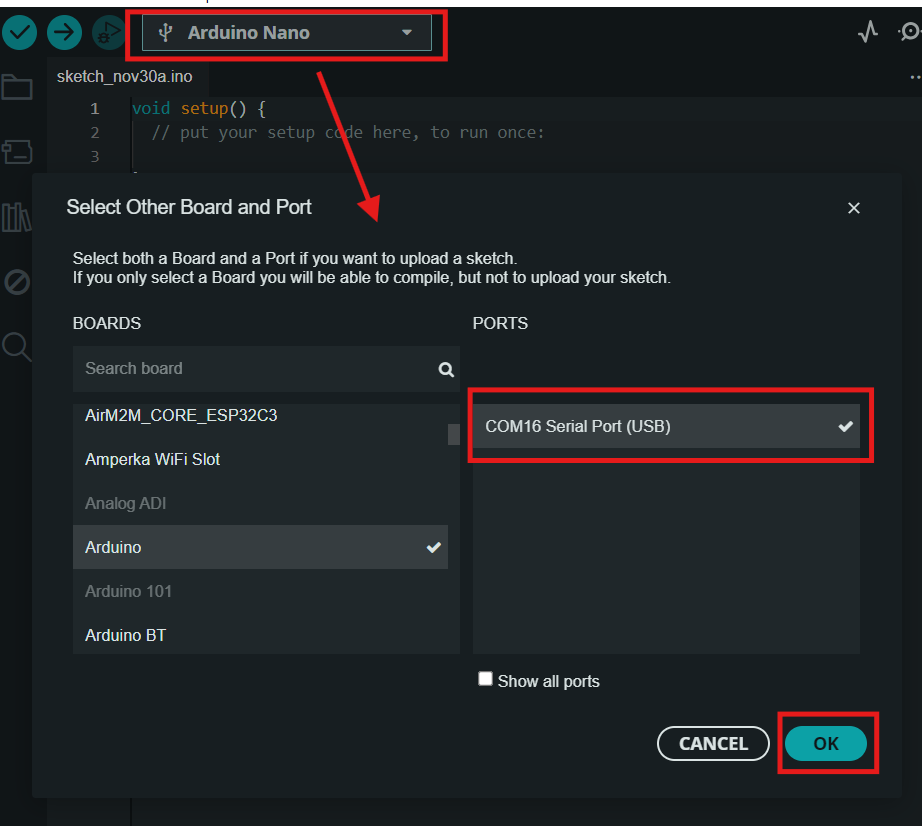
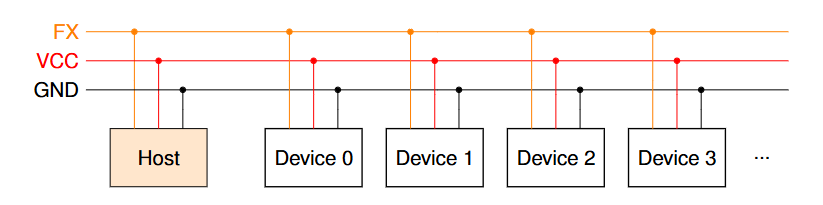

Sensor FX-S50
Sensor digital de obstáculos com alcance ajustavel.
Sensor digital de obstáculos compacto, rápido e configurável. Possui duas formas de leitura: saída digital ou FoxWire (FX). Usando FoxWire é possivel conectar até 32 sensores em um unico fio, reduzindo a complexidade de conexões. A saida dital é 1 quando detecta um obstaculo e 0 quando não detecta.
Datasheet: Datasheet_FXS50
Modelo 3D: Modelo 3D STEP
Características Técnicas
| Característica | Valor |
|---|---|
| Tipo de sensor | Obstaculos digital ajustavel |
| Faixa de medição | 0 a 50cm (*) |
| Tensão de operação | 3,3 a 5V |
| Corrente de operação | 12 a 16mA |
| Interface de comunicação | Saida digital e pino Fox Wire |
| Dimensões | 11,4 x 12,4 x 16,2 mm |
| Peso | 4,9 g |
(*) Medição na configuração padrão. Em testes, chegou a alcançar até 70cm na configuração mais sensivel. Os resultados podem variar em função da cor, inclinação e tamanho do objeto detectado. Ajuste a sensibilidade em função da aplicação.

Comparação com outros sensores

Pinagem
- Pino GND
- Pino Vcc (Alimentação de 3,3V a 5V)
- Pino S de saida digital ( HIGH detectado, LOW não detectado )
- Pino Fox Wire (Configuração e leitura)

Configuração do sensor
Este sensor é configuravel, a tabela abaixo apresenta os principais parâmetros.
| Parametros | Descrição |
|---|---|
| Endereço Fox Wire | Endereço do dispositivo para o protocoolo Fox Wire |
| Potência do Emissor | Potência do emissor, quanto maior maior o alcance. Varia de 10 a 100 |
| Frequência do Emissor | Frequência do emissor, pode ser util para ajustar o alcance ou melhorar o desempenho de sensores proximos (*). valor normalizado de 0 a 255 |
| Trig e Filter_len | Ajuste de filtragem do sinal usando um integrador e um "schmitt trigger". Quanto maior a filtragem mais limpo o sinal, porém menor a frequencia de atualização. O usuario pode fazer o ajuste fino para determinar a melhor configuração |
(*) Na deteção a longa distância a luz emitida por dois sensore um ao lado do outro a luz emitida por cada um pode causar interferencia destrutiva, reduzindo o alcalce de cada um. Usar frequências um pouco diferentes pode ajudar nisso.
Como configurar usando o modo Shell
O modo Shell é usado para se comunicar diretamente com o sensor usando comandos de texto. Esse modo só permite a comunicação com um unico sensor por vez (Para configurar varios sensores simultaneamente use Fox Wire).
-
Conecte o sensor ao computador usando um conversor USB-Serial ou um arduino (Conexão usando Fox Wire com Conversor USB Serial).
-
Abra algum aplicativo de comunicação Serial, como Putty ou o próprio Serial Monitor do Arduino. Configure com baudrate de 115200. No Serial Monitor pode escolher qualquer placa desde que seja a COM correta, por simplicidade selecionei um Arduino.

- Digite "FOX-SHELL" para o sensor entrar no modo Shell. O sensor irá responder enviando "FOX-SHELL INIT!".

- Com o modo Shell iniciado você pode configurar o sensor ou realizar medições. Digite o comando "help" para exibir a lista de comandos disponiveis.
- O comando "dump" exibe os valores de configuração do sensor.

[!WARNING]
Conecte apenas um sensor por conexão (para configurar varios simultaneamente use FoxWire)[!IMPORTANT]
Ao final envie o comando "save" para salvar as configurações, caso contrário, ao desligar as alterações são perdidas!
Lista de comandos do Shell
helplista os comandos disponiveisexitencerra o shellregisterlê ou escreve um registrador de 8bitsdumplista as principais configuraçõesvccmede a tensão aplicada no microcontroladorresetreinicia o sensorsavesalva as alterações realizadasrestorerestaura as configurações de fábricarestorerestaura as configurações de fábrica sem alterar o endereçoreadlê o sensordumplista as principais configuraçõesaddresslê ou altera o endereço do sensore_freqlê ou altera a frequência do emissor (de 0 a 255)e_brightnesslê ou altera o brilho do emissor (de 0 a 100)f_sizelê ou altera o comprimento do filtro (de 1 a 255)f_triggerlê ou altera o limiar de acionamento do filtro (de 1 af_size)aq_freqlê ou altera a frequencia de aquisição (de 1 a 127). Recomendado 14khz. (0 significa o mais rapido possivel, mas o sinal pode ficar instavel).namelê ou altera o nome do dispositivo (até 16 caracteres)uuidlê o id único do sensorscanscaneia com varios brilhos para definir um grau de distância. parâmetro: steps, start_value, step_size, measurements, threshold [%], frequency.set_digitalcoloca o sensor em modo de leitura digitalset_analogcoloca o sensor em modo de leitura analógicaGPIO0Controla as configurações do GPIO0GPIO1Controla as configurações do GPIO1
Diagrama Esquematimo
Conexão usando Saida digital Simples

Conexão usando Fox Wire
Repositório FoxWire: https://github.com/luisf18/FoxWire

Conexão usando Fox Wire com Conversor USB Serial

Exemplo de código usando a saida digital simples
// Fox Dynamics Team
// Codigo simples usando a saida digital
#define SENSOR_PIN 8
void setup(){
Serial.begin(115200);
pinMode(SENSOR_PIN,INPUT);
}
void loop() {
Serial.print( "Leitura do sensor: " );
Serial.println( digitalRead(SENSOR_PIN) );
delay(300);
}